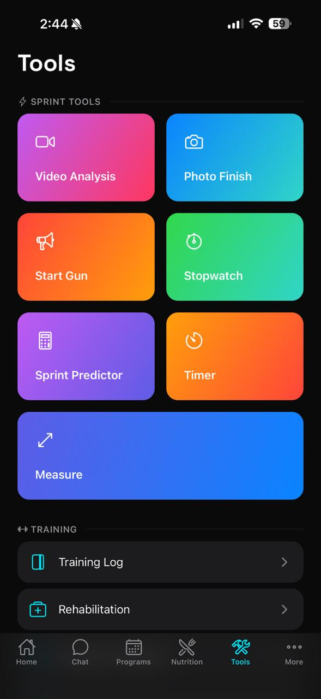
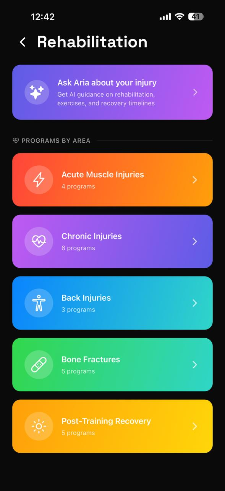
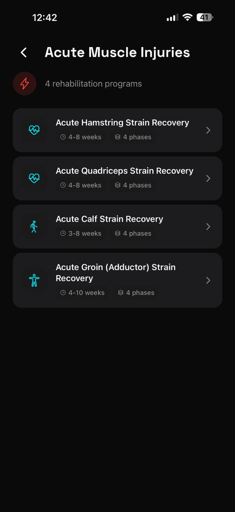
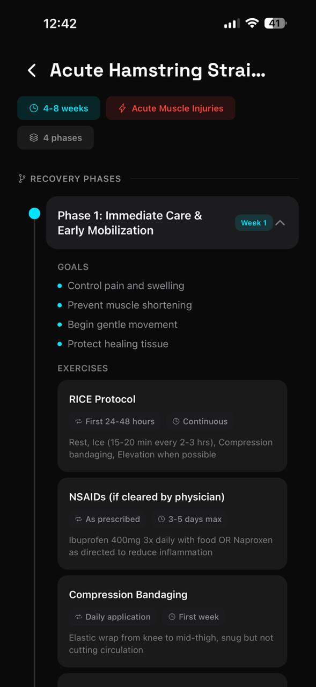
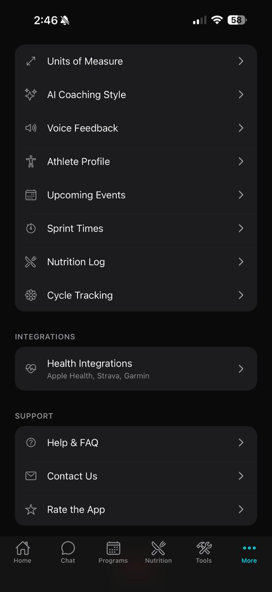
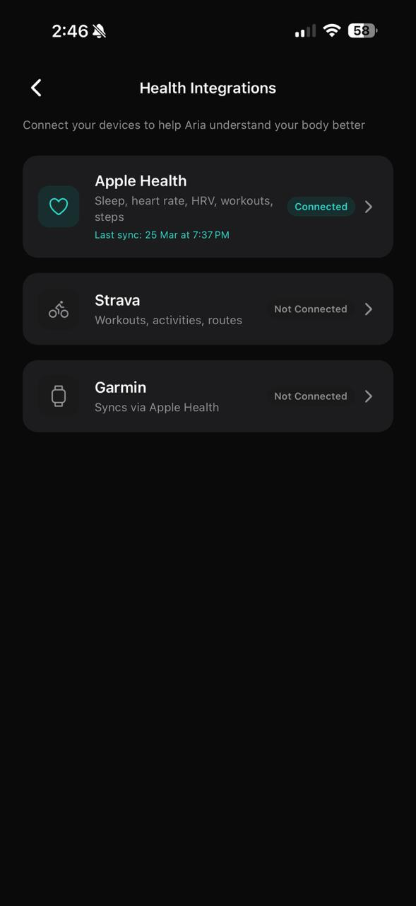

Getting Started
Welcome to Aria — the AI coaching companion built specifically for sprint athletes. Aria learns from your wearable data, training history, and goals to give you personalized coaching that actually matches your body's readiness on any given day.
-
1
Create your account
Download the Aria app and sign up. Your username (e.g.
antonyrugama) becomes your athlete identity inside the platform. -
2
Complete your Athlete Profile
Head to More → Athlete Profile and fill in your height, weight, body fat %, sleep hours, injury status, training days per week, and training focus (Speed, Strength, Power, Endurance). This powers Aria's recommendations from day one.
-
3
Connect your health data
Go to More → Health Integrations and connect Apple Health, Samsung Health, Strava, or Garmin. This gives Aria access to your heart rate, HRV, sleep, and step data — the foundation of your daily readiness score.
-
4
Set your upcoming events
In More → Upcoming Events, add your next competition or race. Aria uses your event date and goal time to calibrate training urgency and taper timing.
-
5
Choose your coaching style
Visit More → AI Coaching Style and pick how you want Aria to communicate: Motivational, Technical, Balanced, or Minimal.
Home Screen
The Home screen is your daily dashboard. Each morning it greets you with a time-aware message and a snapshot of your body and training status.
Recovery Score
Your overall readiness from 0-100, calculated from wearable data. 80+ means you're primed for high-intensity work.
Resting HR
Your resting heart rate trend. A declining RHR over days is a strong recovery signal.
HRV
Heart Rate Variability in milliseconds. Higher and rising HRV indicates CNS recovery and readiness.
Sleep
Hours of sleep synced from your connected device. Used to weight your readiness score for the day.
Below the metrics you'll see your active training program with a Start Session button, any completed meals from your nutrition plan, and the beginning of your AI Coach Insights cards — scroll down to see all of them.
Aria IQ
Aria IQ is the intelligence engine behind your coaching. Every day it analyzes your wearable data, training history, nutrition, and upcoming events to generate a set of personalized insight cards — visible by scrolling down from the Home screen.

Aria IQ insight cards
Each card has a color-coded left border and icon that signals its category:
| Card Type | What it tells you | Example |
|---|---|---|
| Recovery | Today's readiness summary with specific wearable data | "READINESS 100/100 — CNS signals very favorable for speed work" |
| Flag | Alerts you to health patterns that need attention | "Rapid weight loss flag — dropped 1.3 kg over 7 days during comp prep" |
| Training | Specific session recommendations for this week | "Add 3x30m block starts at 95-100% plus 3x60m at 95%" |
| Nutrition | Protein, calorie, or macro feedback | "180g protein at 1.95g/kg — meeting sprint muscle retention needs" |
| Race Prep | Competition countdown with tactical guidance | "55 days to Campeonato Iberoamericano — plan a max-speed test in 3-4 weeks" |
Each card also includes a quick-action link (e.g. Start Session, Adjust Nutrition, Create Training Plan) to jump directly to the relevant part of the app.
Chat with Aria
The Chat tab is your direct line to your AI coach. Aria has full context of your profile, wearable data, training history, and upcoming events — so every answer is personalized to you, not generic advice.

Chat with Aria
Quick prompts on the chat home screen get you started instantly:
- Analyze my recent sprint times
- Build me a 60m training plan
- What should I eat before a meet?
- How do I recover after max-effort sprints?
You can also type anything in the message bar, attach files using the paperclip icon, or use the microphone for voice input.
Chat History
Swipe from the left edge or tap the chat list icon to see all past conversations, organized by date. Tap any to continue it.
New Chat
Tap the pencil icon (top-right) or the New Chat button in the history drawer to start a fresh conversation.
Bilingual
Aria understands and responds in both English and Spanish. Switch freely mid-conversation.
File Attachments
Attach training plans, race results, or other documents for Aria to analyze and reference in its response.
Programs
The Programs tab is where your structured training plans live. Aria generates multi-week programs tailored to your event, fitness level, and training phase — or you can build your own custom sessions.

Periodized training blocks

AI-generated program
-
1
Browse your active program
Your current week is shown with each day's session listed. Tap any day to see the full workout detail — exercises, distances, intensities (% effort), rest periods, and RPE targets.
-
2
Start a session
Tap Start Session on the Home screen or within the program. Aria guides you through each exercise in sequence and records your completion and RPE.
-
3
Log your effort
After finishing, rate your RPE (1-10) and leave a note about how the session felt. This data feeds directly into tomorrow's Aria IQ readiness assessment.

Training progress view
Nutrition
The Nutrition tab manages your meal plans. You can have multiple plans saved — one active at a time — and switch between them as your training phase changes.

AI-generated nutrition plan
Plans have three states:
- Active — the plan currently guiding your daily meals, shown with a green badge
- Saved — ready to activate with the Set Active button
- Archived — previous plans kept for reference
Creating a new plan: Tap the + button. You'll configure:
Activity Level
Sedentary / Light / Moderate / Active. Affects your total calorie calculation.
Training Season
Off Season / Pre Season / In Season / Post Season. Tunes carb and calorie targets.
Dietary Restrictions
Vegan, Vegetarian, Gluten Free, or Dairy Free options are applied to all meal suggestions.
Food Locality
Enter your region (e.g. Costa Rica) so Aria generates meals with locally available ingredients.
Inside an active plan you'll see the calorie ring with your daily total, a Macro Breakdown bar (Protein / Carbs / Fat), and a full Meal Plan with specific foods and calorie counts per meal, from pre-workout snack through to dinner.
Logging a meal: Go to Tools → Nutrition Log. Tap the meal, confirm it as completed, and the calorie ring on your plan updates accordingly. Each logged meal also lets you Get AI Feedback for a personalized assessment of that entry.
Sprint Tools
The Tools tab organizes every performance utility into two sections: Sprint Tools (track-side tools for active sessions) and Training (logs and analytics).

Sprint Tools
| Tool | What it does |
|---|---|
| Video Analysis | Record or upload a sprint video for AI-assisted form analysis. Aria identifies biomechanical cues and gives actionable technique feedback. |
| Photo Finish | Use your camera to capture finish-line moments and manually record times for unofficial sessions. |
| Start Gun | Plays an authentic start-gun sound for reaction time drills. Tap to fire. |
| Stopwatch | Precision stopwatch with lap function — ideal for hand-timing training runs. |
| Sprint Predictor | Enter a known time and distance; Aria predicts your equivalent performance over other distances using sprint conversion formulas. |
| Timer | Countdown timer with audio alert. Useful for rest intervals and warm-up blocks. |
| Measure | AR-assisted distance measurement tool for marking out sprint distances on a track or field. |
Training section links:
- Training Log — full history of every completed session with RPE, duration, and exercises
- Rehabilitation — structured recovery programs by injury type
- Progress & Analytics — weekly charts, health trends, and workout frequency
- Nutrition Log — chronological record of every logged meal
Progress & Analytics
Found under Tools → Progress & Analytics, this dashboard gives you a bird's-eye view of your training week and health trends.
The Weekly Summary chart shows session volume across the 7-day window as an area chart. Peaks on high-volume days are clearly visible so you can spot overloading patterns.
Advanced Analytics panels:
- Training Load — percentage-based load indicator with Low / Moderate / High status badge
- Heart Rate — populated once wearable HR data syncs from Apple Health or Samsung Health
- Workout Frequency — rolling graph of sessions per week over time
Scroll down for Health Trends (Resting HR and Weight over time with directional arrows) and Recent Workouts — a chronological list of completed sessions with names and durations.
Sprint Times
Found under More → Sprint Times, this is your personal records dashboard. Track official and training times across all sprint distances.
Distances tracked: 30m · 60m · 100m · 200m · 400m. Switch between them using the pill selectors at the top.
For each distance you'll see:
- A highlighted Personal Record card with your PR time, date, and a PR badge
- A Recent Times list showing every logged run in reverse chronological order
Logging a time: Tap + LOG in the top-right. Enter the distance, time, date, wind speed (if applicable), and any notes. Aria automatically applies wind correction if wind data is entered, ensuring your times are compared on a level basis.
Upcoming Events
Found under More → Upcoming Events. This is where you tell Aria what you're training toward — a critical input for intelligent periodization.
Each event includes:
- Event name, type (Race / Competition), and priority level (Low / Medium / High)
- Date, location, and primary distance
- Goal time
- Sub-events (e.g. 100m Semifinal, 200m Final) with individual goal times
The countdown label updates automatically (in 1 month, 3 days ago, etc.). Aria references your nearest high-priority event in every coaching insight.
Adding an event: Tap the cyan + button in the bottom-right corner. Fill in the details and save.
Cycle Tracking
Aria's Cycle Tracking feature is built for female athletes who want their training and nutrition recommendations adapted to their hormonal cycle. Found under More → Cycle Tracking.

Cycle phase dashboard

Cycle settings
Setup (first time): Tap Get Started and then go to Cycle Settings to enter your cycle length, period length, and last period start date. Toggle Active to enable the feature.
The four cycle phases Aria tracks:
The main Cycle screen shows a circular phase wheel with your current day highlighted, the phase name, and a daily log section where you can record:
Energy
Rate your energy level on a 5-point scale for today.
Pain
Track any pain or discomfort level (cramps, muscle soreness).
Mood
Log your mood so Aria can factor emotional state into coaching tone.
Bloating
Track bloating and fluid retention — common during the luteal phase.
At the bottom of the screen, Aria Recommendation provides phase-specific coaching adjustments. For example, during the luteal phase: "Reduce explosive work volume, increase magnesium and reduce sodium, may feel fatigued — listen to your body."
Rehabilitation
Found under Tools → Rehabilitation. When you're managing an injury, Aria provides structured evidence-based recovery programs organized by injury type.

Rehab programs

Exercise phases

Recovery tracking
At the top, Ask Aria about your injury opens a dedicated chat thread where you can describe your injury and get immediate AI guidance on exercises, timelines, and load management.
Programs by area:
- Acute Muscle Injuries — Hamstring, Quadriceps, Calf, and Groin strain protocols (4-10 weeks, 4 phases each)
- Chronic Injuries — 6 programs for persistent or recurring conditions
- Back Injuries — 3 lumbar and thoracic programs
- Bone Fractures — 5 return-to-sport protocols for stress fractures and acute breaks
Each program is broken into phases (Protection → Strengthening → Functional → Return to Sport) with clearly defined duration ranges and weekly progressions.
Settings & Profile
Access the full settings menu from the More tab at the bottom-right of the screen. Your profile card at the top shows your username, sport, and level.

Settings & Profile
| Setting | Description |
|---|---|
| Appearance | Switch between Dark and Light theme. Dark is the default and recommended for track-side use. |
| Edit Profile | Update your display name, photo, and public-facing info. |
| Notifications | Configure daily readiness alerts, session reminders, and nutrition nudges. |
| Language | Switch the app interface between English and Spanish. |
| Units of Measure | Toggle between metric (kg, km) and imperial (lb, miles). |
| AI Coaching Style | Choose Motivational, Technical, Balanced, or Minimal coaching tone. |
| Voice Feedback | Enable spoken coaching feedback during sessions. |
| Athlete Profile | Update physical stats, sleep habits, injury status, and training focus. |
| Privacy | Control what data Aria stores and how it is used. |
AI Coaching Style options:
- Motivational — encouraging, hype-focused feedback to keep you fired up
- Technical — data-driven analysis with detailed form and pace breakdowns
- Balanced — mix of encouragement and technical insights (default)
- Minimal — brief, essential feedback only — no fluff
Health Integrations
Found under More → Health Integrations. Connecting your devices is the single most impactful thing you can do to improve the quality of Aria's coaching — it replaces guesswork with real physiological data.

Health Integrations
Apple Health
Syncs sleep, resting heart rate, HRV, workouts, and step count. This is the primary data source for your daily readiness score. Tap to connect and authorize permissions.
Samsung Health
Syncs health metrics from Samsung Galaxy devices including heart rate, sleep, and activity data. Connect via the Samsung Health row in Health Integrations.
Strava
Imports workout activities and routes. Useful if you log aerobic recovery sessions or warm-up runs in Strava. Connect via the Strava row.
Garmin
Syncs via Apple Health if your Garmin watch is connected to Apple Health. Ensure the Garmin Connect app is writing to Apple Health for data to flow into Aria automatically.
The last sync timestamp appears in cyan below each connected integration (e.g. Last sync: 25 Mar at 7:37 PM). If your data appears stale, open the integration row and tap Sync Now.
Quick Reference
| I want to... | Where to go |
|---|---|
| See today's readiness and insights | Home → scroll down to AI Coach Insights |
| Ask Aria a coaching question | Chat tab |
| Start today's training session | Home → Start Session button |
| Log a sprint time | More → Sprint Times → + LOG |
| Add a race to my calendar | More → Upcoming Events → + |
| View my nutrition plan | Nutrition tab |
| Log a meal | Tools → Nutrition Log |
| See my training history | Tools → Training Log |
| Track cycle phase | More → Cycle Tracking |
| Find a rehab program | Tools → Rehabilitation |
| Connect Apple Health | More → Health Integrations |
| Connect Samsung Health | More → Health Integrations |
| Change coaching style | More → AI Coaching Style |
| Update physical stats | More → Athlete Profile |